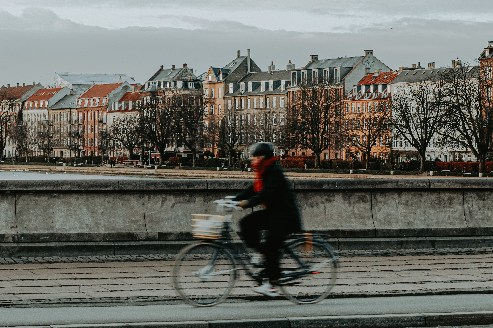
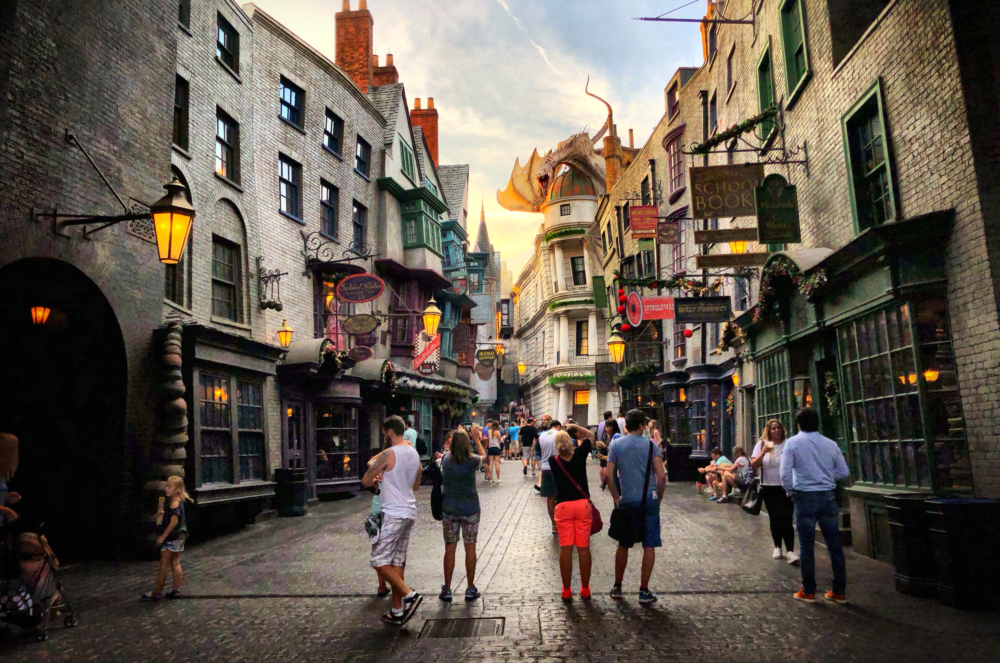

About me
Join me on my journey as I explore the wonders of the world!
Sun, sangria and shopping in Alicante
Visited, Oct 7, 2023

Hello, travellers!
One cannot visit Alicante without savoring the iconic dish of paella. The fragrant saffron-infused rice, succulent seafood, and tantalizing flavors left us craving for more. Pairing it with a glass of traditional sangria added a refreshing touch to our dining experience, perfectly complementing the warm Mediterranean ambiance. Alicante proved to be a haven for shopaholics like us. The city boasts a wide array of boutiques, markets, and shopping centers, offering everything from trendy fashion to unique handicrafts. We spent hours exploring the bustling streets, discovering hidden gems, and bringing back souvenirs that would forever remind us of our time in this vibrant city. Embracing the Heatwave: Our visit coincided with a heatwave that swept across Europe, making Alicante exceptionally hot. However, the scorching temperatures did not dampen our spirits. Instead, we embraced the sunny weather, seeking refuge in shady spots, indulging in refreshing gelato, and taking leisurely strolls along the stunning coastline. The radiant sunshine added an extra layer of charm to our adventures, creating unforgettable memories. Alicante, with its delectable cuisine, vibrant shopping scene, and sun-drenched days, proved to be an enchanting destination. Despite the heatwave, we reveled in the unique experiences this Spanish gem had to offer. Whether it was the flavorsome paella, the invigorating sangria, or the joy of exploring local markets, our trip to Alicante will forever hold a special place in our hearts.
Weekend in Milano
Visited, Oct 1, 2023

Hey, explorers!
Our first stop in Milano was to treat ourselves to the city's renowned gelato. The creamy, flavorful scoops of gelato were a true delight for our taste buds, offering a refreshing respite from the summer heat. We also couldn't resist the temptation of sipping authentic Italian coffee, immersing ourselves in the rich flavors and vibrant café culture that Milano is famous for. While Milano is known for its high-end fashion and luxury brands, we decided to explore the more affordable side of shopping by visiting Primark. The bustling store offered a wide range of trendy clothing and accessories, allowing us to indulge in some retail therapy without breaking the bank. It was a pleasant surprise to find stylish pieces at budget-friendly prices.As we were enjoying our time in Milano, meeting up with friends added an extra layer of excitement to our trip. However, amidst the hustle and bustle of the city, an unfortunate incident occurred. While mingling with our friends, my necklace was stolen by opportunistic criminals. Though disheartening, we didn't let this incident overshadow the overall experience of our trip. Our weekend trip to Milano was a whirlwind of flavors, fashion, and unexpected adventures. From savoring gelato and Italian coffee to exploring the shopping scene at Primark, we immersed ourselves in the vibrant atmosphere of the city. While the incident with my stolen necklace was unfortunate, it served as a reminder to stay vigilant in unfamiliar surroundings. Despite this setback, our memories of Milano will forever be filled with the joy of indulging in Italian delights and the thrill of exploring a city known for its fashion and culture.
Pisa, pizza and the famous tower
Visited, July 2, 2023

Hello, travel-lovers!
Our hotel, nestled just outside the bustling city center, provided us with a tranquil retreat. What made it truly special was the nearby white beach, adorned with smooth rocks instead of sand. We spent leisurely afternoons basking in the sun, enjoying the serene atmosphere, and creating precious memories with our loved ones. No trip to Pisa is complete without a visit to its most famous landmark, the Leaning Tower of Pisa. We marveled at the architectural marvel, its iconic lean captivating our attention. Climbing up the tower's spiral staircase, we were rewarded with breathtaking views of the city and surrounding landscapes. The experience of being inside this historical masterpiece was truly unforgettable. Beyond the tower, Pisa offered us a glimpse into its rich history and vibrant culture. We wandered through the narrow streets, admiring the beautiful architecture, and stumbled upon charming cafes and gelaterias. The city's lively atmosphere and friendly locals added to the overall warmth and charm of our visit. Our family trip to Pisa, Italy, was a perfect blend of relaxation, exploration, and cultural immersion. From our hotel's unique white beach to the awe-inspiring visit to the Leaning Tower of Pisa, every moment was filled with excitement and wonder.
Bicycling and long walks in København
Visited, June 4, 2023
Good morning, travellers!
København is renowned for its stylish boutiques, trendy shops, and bustling markets. With my friends by my side, we embarked on a shopping spree, discovering the latest fashion trends and unique Danish designs. From high-end fashion to quirky vintage stores, København offered a diverse range of shopping experiences that catered to all our tastes and preferences. One of the best ways to explore København is by bicycle. With its well-planned bike lanes and bike-friendly infrastructure, the city provided the perfect opportunity for us to pedal our way through its charming streets. We cycled past iconic landmarks, picturesque canals, and vibrant neighborhoods, immersing ourselves in the local culture and enjoying the freedom of exploring at our own pace. København is a city best explored on foot, and we made sure to take full advantage of it. We wandered through the historic streets of Nyhavn, admiring the colorful buildings and lively atmosphere. We also strolled along the waterfront promenade, enjoying the scenic views and stopping at cozy cafes for a quick refreshment. Our walks allowed us to soak in the city's charm and discover hidden gems along the way. One unique aspect of our trip was the presence of my beloved dog. København is known for its pet-friendly culture, and we were delighted to find that many cafes, parks, and even shops welcomed our furry friend with open arms. From exploring dog-friendly parks to enjoying outdoor dining experiences together, our four-legged companion added an extra layer of joy and companionship to our adventures. København, with its vibrant shopping scene, bike-friendly infrastructure, and pedestrian-friendly streets, proved to be an ideal destination for a memorable Danish adventure. From exploring the city's fashion-forward boutiques to cycling through its charming neighborhoods and enjoying leisurely walks, our trip was filled with unforgettable moments. The presence of our furry companion made it even more special, creating cherished memories that will last a lifetime.
History and shopping in Orlando
Visited, Oct 13, 2022
Hey, travellers!
Orlando proved to be a shopper's paradise, with a plethora of malls, outlets, and unique boutiques. We spent hours exploring the diverse shopping options, finding everything from trendy fashion to quirky souvenirs. The city's vibrant atmosphere and friendly locals made our shopping experience even more enjoyable. Beyond the theme parks, Orlando boasts a rich historical heritage waiting to be discovered. We delved into the city's past by visiting captivating museums and historical sites. From the interactive exhibits at the Orlando Science Center to the immersive experiences at the Orange County Regional History Center, we learned about the region's fascinating history and its impact on the present. Orlando's culinary scene left us spoilt for choice. We savored a variety of cuisines, from local favorites to international delights. Whether it was indulging in mouthwatering seafood at a waterfront restaurant or sampling authentic ethnic dishes, our taste buds were treated to a delightful culinary journey. The city's diverse food options ensured that everyone in our family found something to satisfy their cravings. Our family trip to Orlando was more than just a vacation; it was an opportunity to bond and create lasting memories. From thrilling rides at the theme parks to exploring the city's hidden gems, every moment was filled with laughter and joy. The shared experiences and quality time spent together made this trip truly special. Orlando, with its blend of shopping, history, and culinary delights, provided the perfect backdrop for an unforgettable family adventure. From discovering the city's rich history to indulging in its diverse cuisine, we experienced the best of what Orlando has to offer.